1 系统平台登录
本系统使用谷歌浏览器登录，分辨率建议使用1366*768/1920*1080。登录首页链接地址为：http://10.154.13.24:8007/gas-portal/login 。首页界面如下图所示：
1.1.1 登录方法
警员插入数字证书，点击登录。如下图所示：
1.1.2 退出系统
在系统页面右下角点击“退出”按钮，弹出友好提示，点击提示中的“确定”按钮，退出系统，如下图所示：
图 1.3
1.1.3 首页功能介绍
首页展示，如下图所示：
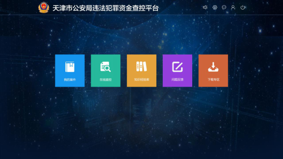
图 1.4首页功能介绍
2 系统管理
对违法犯罪查控平台进行系统配置，点击首页右上角齿轮状图标进入系统管理页面，如下图所示：
进入页面后，左侧导航栏显示页面，如下图所示：
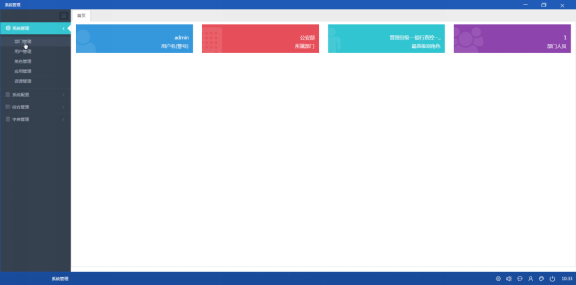
图 2.2系统管理首页
2.1 系统管理
2.1.1 部门管理
对部门信息的增加、修改、位置调整及注销等操作。详细步骤如下：
2.1.1.1 添加部门
在对应的组织部门下点击“+”按钮，如下图所示：
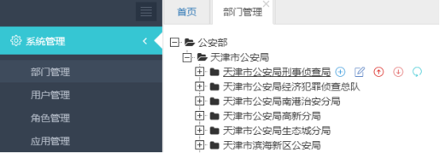
图 2.3添加部门
在弹窗页面填写部门信息，点击保存按钮，如下图所示：
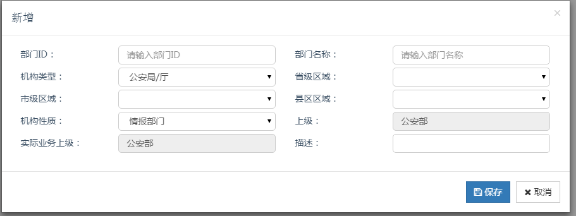
图 2.4新增界面
2.1.1.2 用户管理
用户管理中点击增加按钮弹窗中填写警员警号、姓名、部门等信息，并上传警官证，点击“保存”按钮，如下图所示：
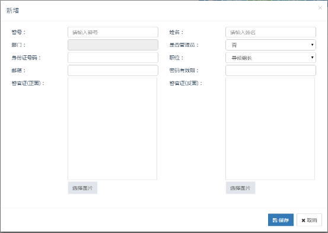
图 2.10增加
2.1.1.3 修改
选择要修改的警员，点击“修改”按钮，如下图所示：
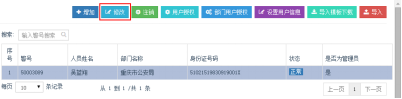
图 2.11修改
弹窗输入修改的信息，点击“保存”按钮，如下图所示：
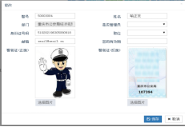
图 2.12保存
2.1.1.4 注销
选择要操作的警员，点击“注销”按钮。
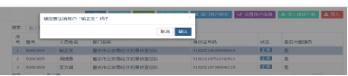
图 2.13注销
注销后的警员，状态为“已注销”。 如下图所示：
图 2.14注销后状态
2.1.1.5 用户授权
选择要授权的警员，点击“用户授权”按钮。如下图所示：
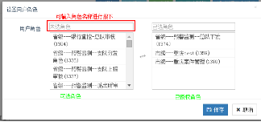
图 2.15用户授权
取消授权时，点击右侧对应角色，点击“保存”即可取消授权。
确保角色有访问应用资源的角色，查看角色所属应用详见角色管理。
2.1.1.6 部门授权
左侧导航栏选择授权部门，点击“部门用户授权”，弹窗搜索角色，添加到右侧，点击保存即可，如下图所示：
图 2.16部门授权
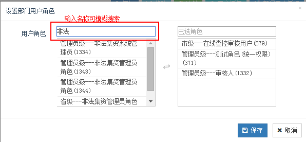
图 2.17设置部门用户角色
2.1.1.7 设置用户信息
勾选警员，点击“设置用户信息”填写警员基本信息，如下图所示：
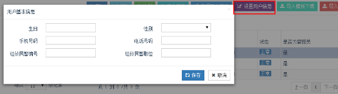
图 2.18用户基本信息
2.1.1.8 导入
点击“导入目标下载”下载模版。如下图所示：
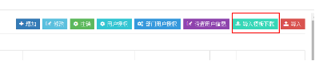
图 2.19导入模板下载
将填写好的模版导入，点击“导入”按钮，选择模版，点击“导入”即可。如下图所示：
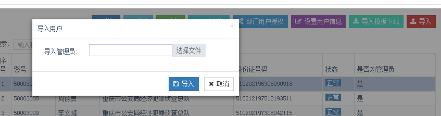
图 2.20导入用户
2.1.2 角色管理首页
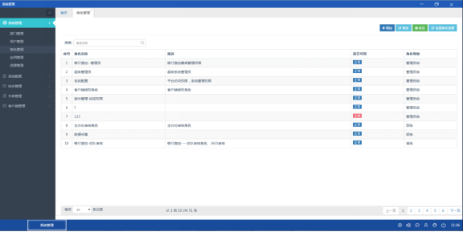
设置角色，对应角色的资源分配。具体步骤如下：
2.1.2.1 增加角色
页面点击“添加”按钮，在弹出页面填写角色名称，选择角色等级等信息，完成角色添加，进行下一步“设置资源”，如下图所示：
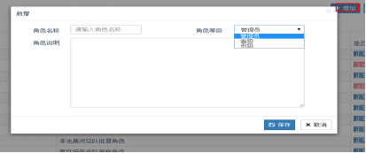
图 2.21新增
点击添加的角色，点击“设置资源角色”按钮，弹窗选择所属应用，确保该角色具有访问哪些应用。如下图所示：
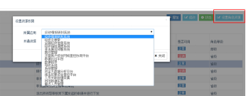
图 2.22设置资源角色
注：对角色资源有过修改的，修改完成后需至查控配置中点击“重置查控类型”清理之前的配置缓存记录。
2.1.2.2 修改
修改角色信息，选中角色点击“修改”按钮，在弹窗中修改信息后，点击保存即可，如下图所示：
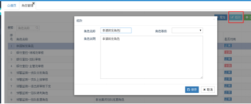
图 2.23修改
2.1.2.3 注销
选择角色，点击“注销”按钮，点击确定后，该角色会显示注销，注销状态下角色不可用。如下图所示：
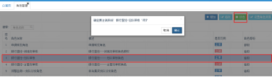
图 2.24注销
2.1.3 应用管理
对应用系统的管理，包含对应用的增加、修改和注销操作。如下图所示：
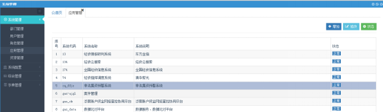
图 2.25应用管理
2.1.3.1 增加
点击“增加”按钮，在弹窗中添加系统的配置信息，保存，如下图所示：
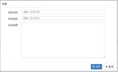
图 2.26增加
2.1.3.2 修改
点击要修改的应用信息，点击“修改”按钮，在弹出页面修改信息，保存即可。如下图所示：
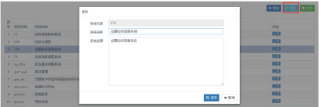
图 2.27修改
2.1.3.3 注销
鼠标点击选择要注销的应用，点击“状态”提示弹窗，点击“确定”。如下图所示：
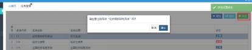
图 2.28注销
右上角有绿色弹窗，提示设置成功即可，已注销的应用状态为“注销”。
2.2 系统配置
2.2.1 查控配置
配置查控页面已勾选左侧导航栏末级资源，点击“+配置”进行查控页面的显示信息修改，如下图所示：
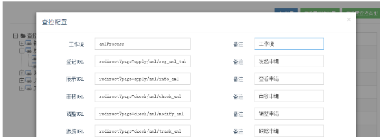
图 2.35查控配置
注：查控配置、查控类型修改后，需进行重置操作，清理缓存记录，未修改不用进行任何重置操作。如下图所示：
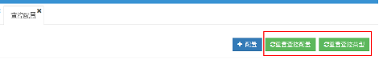
图 2.36查控配置界面操作
3 我的案件
案件管理主要功能是对案件的基本情况进行管理，其中包括六项主要功能：新增案件、编辑案件、删除案件、授权案件、合并案件、同步案件。下面将逐一对其具体功能做介绍。点击“我的案件”按钮，进入案件管理页面。如下图所示：
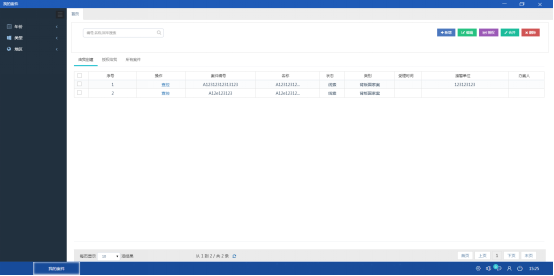
图 3.1 案件管理功能首页
3.1 新增
在案件管理中点击“新增”按钮进入新建案件页面，按照页面提示信息填写内容。必填的内容由“*”号所标识。点击“新增”。如下图所示：
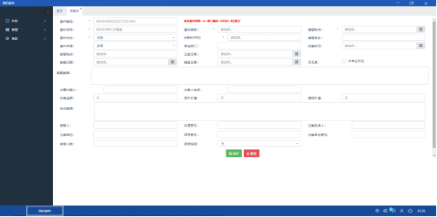
图 3.2 新增案件界面
输入必填字段信息后，点击“保存”按钮，新增的案件信息就会在“案件管理”主页的列表中展示出来。如果对输入的信息不满意，可点击“重置”按钮，将会清空所有已填写的信息，可再次进行填写。
3.1.1 勾选本单位可见
如果选中了此选项，那么该案件信息只能被本单位的人查看，不能被其他单位的人员查看该案件信息。
3.1.2 下拉选项的功能
“案件来源”，“案件状态”，“保密级别”这三个可以根据下拉功能选择需要的内容。如下图所示：
图 3.3下拉选项功能展示
3.1.3 树结构功能
“案件类别”，“所属地区”可根据树结构来选择案件的类别和发案地点（可输入内容进行搜索）。如下图所示：
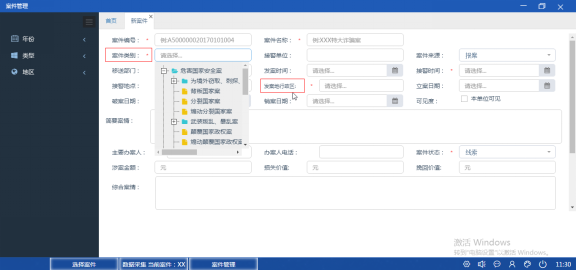
图 3.4树结构功能展示
3.2 编辑
选中案件列表中某一个案件前方的复选框，点击“编辑”按钮，进入该案件的编辑界面，可对该案件进行编辑修改。如下图所示：
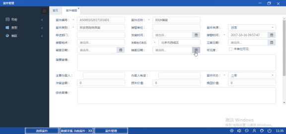
图 3.6案件编辑页面
3.3 授权
“授权”功能，可将某个案件授权给其他用户进行管理。选中一条案件，点击“授权”，授权界面，如下图所示：
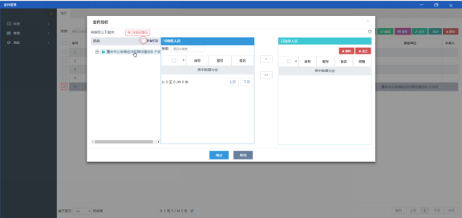
图 3.7 案件授权界面
选择左侧机构（所有机构：显示全国机构），选择用户，每个用户授权的范围限于查看、编辑、删除、授权中的一个。如下图所示：

图 3.8授予多个用户不同的权限
点击“清空”，可以对所有的用户取消授权。或者选中一个用户，点击“删除”，对一个用户取消授权。
3.4 合并
选中两个或者两个以上的案件，点击“合并”按钮，如图所示：
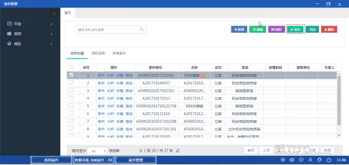
跳转到案件合并页面 ，形成一个新的案件，输入有效信息点击“保存”即可把多个案件信息进行合并。如下图所示：
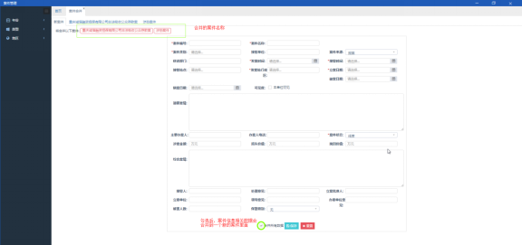
图 3.9案件合并操作图例
3.5 删除
选中一条或者多条案件，点击“删除”按钮，弹出要删除案件的友好提示对话框，点击提示框中“确定”按钮，即可将列表中的案件删除，点击“取消”或“关闭”按钮，案件不会被删除。如下图所示：
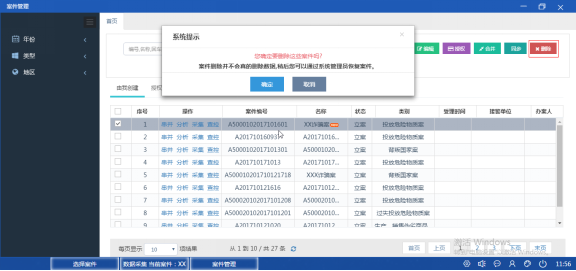
图 3.10删除案件
3.6 搜索
在搜索输入框中输入有效案件名称或案件编号，按回车键，进行搜索。
输入案件名称进行搜索，如下图所示：
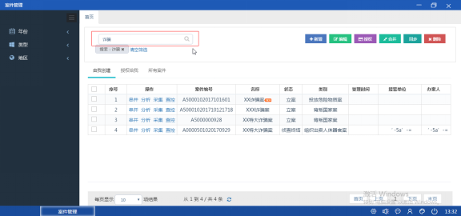
图 3.11搜索操作图例
输入案件编号进行搜索，如下图所示：
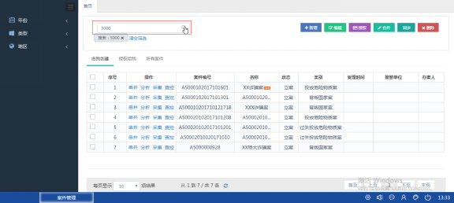
图 3.12搜索操作图例
为了方便用户浏览信息，采取分页显示信息列表的信息。分页可以直接点击某一页快速浏览，也可以点击左右箭头进行上一页和下一页浏览，也可选择一页显示多条数据。如下图所示：
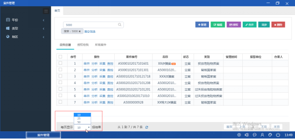
图 3.13分页显示图例
左侧导航栏进行案件分类统计。如下图所示：
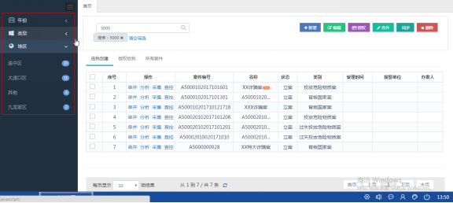图 3.14案件查询类别
点击要查看的地区，在右侧展示区即可显示该地区的案件信息，如图：
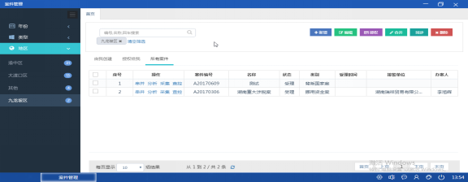
图 3.15 地区案件信息
4 查控系统
从三方开展账户资金网络查控业务角度出发，给出了平台功能的建设要求，供银行业监督管理机构或有关部门、公安机关以及银行业金融机构内部共同使用，适用于系统工程的建设。如下图所示：
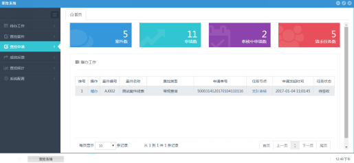
图 7.1查控系统
4.1 待办工作
显示要处理的工作信息以及办理过的信息，待办工作主要显示为需要审核的文件和对于本人发起的申请驳回后的重新调整处理;已办工作可查看处理过的案件信息。如下图所示：
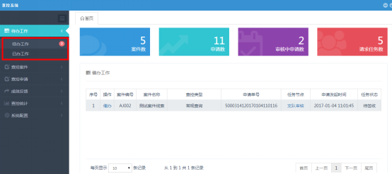
图 7.2待办工作
对于发起的申请有审核权限的，在“待办工作”栏会有数字标示显示，其审核操作如下：
4.1.1 待办工作
点击“待办工作”显示要处理的案件，点击“签收”。如下图所示：
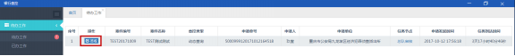
图 7.3签收
点击“办理”，在弹出页面，阅览信息，确认无误后审核通过，并点击“提交”按钮。如下图所示：
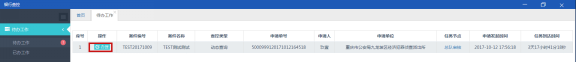
图 7.4办理
弹出页面进行审批操作：如下图所示：
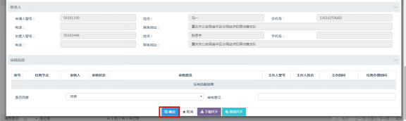
图 7.5提交审核
同时可点击“下载PDF”或“预览PDF”查看申请的查控信息。
4.1.2 已办工作
显示已经办理的工作，如待办工作中签收、办理的工作会在“已办工作”中显示，可进行部分信息的查看。如下图所示：
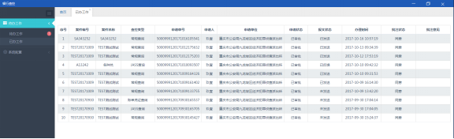
图 7.6已办工作
4.2 查控案件
显示登入警员发起的案件信息，用以查控申请，如下图所示：
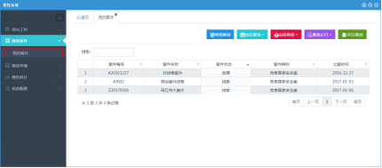
图 7.7查控案件
选中案件信息后，在案件下方区域显示案件相关信息，如下图所示：
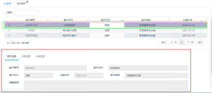
图 7.8案件信息显示
搜索框输入案件信息，可搜索案件，如下图所示：
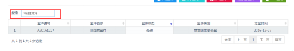
图 7.9搜索案件信息
勾选案件后，点击查控种类，跳转到查控申请页面，发起申请步骤参照查控申请中的发起申请。如下图所示：
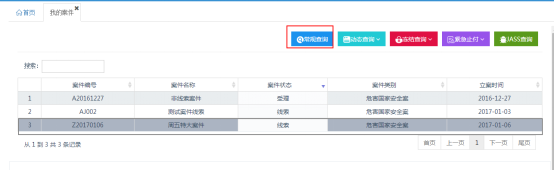
图 7.10查控申请页面
4.3 查控申请
主要对常规查询、动态查询、冻结/续冻/解冻、紧急止付/解除止付操作执行流程进行了规范。
前置条件：已有查控案件存在，发起查控申请时可根据案件进行。如下图所示：
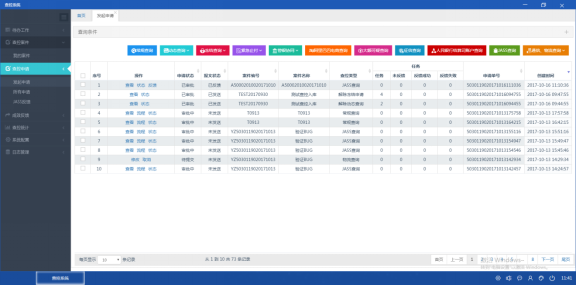
图 7.11查控申请
4.3.1 发起申请
4.3.1.1 常规查询
常规查询是指银行业金融机构依照有关法律或行政法规的规定以及公安机关查询的要求，协助公安机关查询涉案财产信息，主要包括：被查询对象的存款账户资料、账户交易明细等相关信息。其操作步骤如下：
发起申请页面点击“常规查询”按钮。如下图所示：
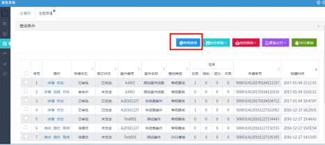
图 7.12常规查询
弹出页面点击“案件”选择对应的案件信息，如下图所示：
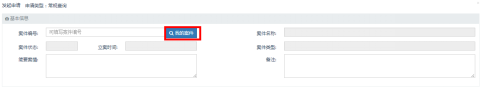
图 7.13常规查询界面
填写“涉案对象”，具体如下：如下图所示：
图 7.14发起申请填写涉案对象
点击“新增”按钮，添加涉案对象信息：
选择查询种类并选择银行，点击保存即可。
查询种类分为：账户信息、账户信息以及交易明细（开户至今、一年以内、自定义时间）。如下图所示：
图 7.15涉案信息填写
蓝色框为对添加的信息进行删除、修改操作。
绿色框为批量导入操作，可将填写的信息誊写到下载的模板中进行导入。
添加“涉案张卡号”信息，其操作步骤同上（可手动输入，可编辑、可批量）.如下图所示：
图 7.16添加信息
上传“法律文书”，其操作如下：
点击“上传文书”按钮，在弹出页面选择银行，并输入法律文书号，点击“开始上传”按钮。如下图所示：

图 7.17上传文书
上传完成后，如图所示，对上传的文书可修改、可删除。如下图所示：

图 7.18修改及删除
添加协警人员信息，点击“提交申请”，等待上级审核。如下图所示：
图 7.19提交申请
注：点击“保存”后，在发起申请首页可对申请再进行修改、取消操作，如下图所示：
图 7.20保存后页面展示
一、 发起人发起查控申请：
1、 进入查控系统，选择“发起申请”，点击“常规查询”按钮
2、 弹出页面点击“我的案件”，如图：
3、 在弹出窗口，选择要发起查控的案件，点击确定，如图：
4、 填写“涉案对象、涉案帐卡号、法律文书”等信息
5、 填写协查警员，点击“提交申请”
二、 审核人进行审核：
审核领导登录后，在待办工作区有提示，如图：
1、 进入待办工作区后，显示要办理的信息，点击“签收”按钮
2、 签收完成后，点击“办理”按钮
3、 办理后，显示总队审核页面，领导对申请信息进行查阅
4、 审核无误后，选择是否通过并填写审核意见，点击“确定”按钮，查控申请至此发送至银行端，等待回复即可。
4.3.1.2 动态查询
动态查询是指公安机关为了实时掌握涉案银行账户的动态信息，将涉案账户提供给银行业金融机构，对提出请求后一定时间内账户动态信息（开户登记资料变动、账户操作等信息，限定100天之内），通过银行业金融机构的短信平台实时发送给公安民警，同时将动态的详细信息转发至平台上。如下图所示：
图 7.21动态查询
以动态查询为例，其操作步骤如下：
点击“动态查询”，在弹出页面，点击“我的案件”选择要动态查询的案件信息，如下图所示：
图 7.22动态查询页面信息填写
填写涉案银行卡号信息，点击“新增”按钮。如下图所示：
图 7.23涉案银行卡号
在弹出页面填写卡号信息，选择账户类型、执行区间以及银行，点击保存。
点击“上传文书”按钮，在弹出页面选择银行，并输入法律文书号，点击“开始上传”按钮。如下图所示：
图 7.24上传法律文书
上传完成后，如图所示，对上传的文书可修改、可删除。如下图所示：

图 7.25修改文书号及删除
添加协警人员信息，点击“提交申请”，等待上级审核。如下图所示：
图 7.26对文书修改或删除
注：点击“保存”后，在发起申请首页可对申请再进进行修改、取消操作，如下图所示：
图 7.27保存后界面显示
4.3.1.3 冻结查询
冻结是指金融机构依照法律的规定以及公安机关冻结的要求，在一定时期内禁止单位或个人提取其存款账户内的全部或部分存款的行为。
继续冻结是指金融机构依照法律的规定以及公安机关续冻的要求，继续对冻结的存款账户进行冻结的行为。
解除冻结是指金融机构依照法律的规定以及公安机关解冻的要求，解除原已冻结的存款账户的行为。如下图所示：
图 7.28冻结查询
以冻结申请为例，其操作步骤如下：
点击“冻结申请”，在弹出页面，点击“我的案件”选择要冻结的案件信息。如下图所示：
图 7.29冻结申请页面信息
添加涉案账卡号，点击“新增”按钮。如下图所示：
图 7.30添加银行卡号
在弹出页面添加银行账卡号，并填写人员信息及冻结方式，选择银行后点击“保存”按钮。如下图所示：
图 7.31涉嫌账卡号信息填写
点击“上传文书”按钮，在弹出页面选择银行，并输入法律文书号，点击“开始上传”按钮。如下图所示：
图 7.32上传法律文书
上传完成后，如图所示，对上传的文书可修改、可删除。如下图所示：

图 7.33修改文书号或删除操作
添加协警人员信息，点击“提交申请”，等待上级审核。如下图所示：

图 7.34添加协警人员信息
注：点击“保存”后，在发起申请首页可对申请再进进行修改、取消操作，如下图所示：
图 7.35保存后界面显示
4.3.1.4 紧急止付
紧急止付是指银行业金融机构对公安机关要求的账户内全部资金停止办理现金支付和资金转出的交易行为。紧急止付的时间范围限制为48小时之内。如下图所示：
图 7.36紧急止付
以“紧急止付”为例，其操作步骤如下：
点击“紧急止付申请”，在弹出页面点击“我的案件”在弹出框选择相应的案件。如下图所示：
图 7.37紧急止付
选择账号类型和银行，输入账卡号，点击保存。如下图所示：
图 7.38涉案账卡号
点击“上传文书”按钮，在弹出页面选择银行，并输入法律文书号，点击“开始上传”按钮。如下图所示：

图 7.39上传文书号
上传完成后，对上传的文书可修改、可删除。如下图所示：
图 7.40法律文书
添加协警人员信息，点击“提交申请”，等待上级审核。如下图所示：
图 7.41提交申请
注：点击“保存”后，在发起申请首页可对申请再进进行修改、取消申请操作，如下图所示：
图 7.42保存后界面展示